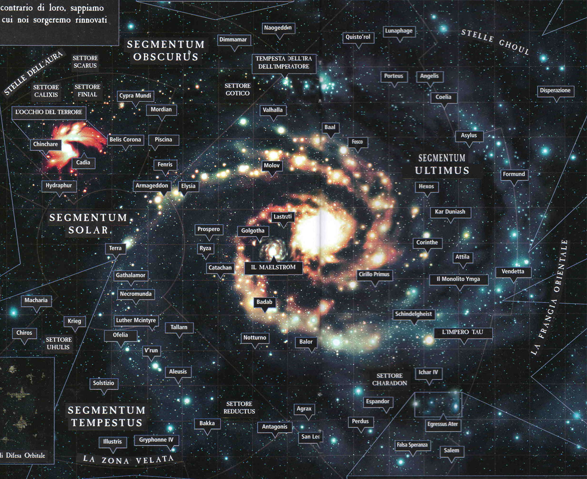

The Segmentum Solar is the vast region of Imperial space centred on Terra and the Sol System. The Imperial Navy shipyards for the Segmentum are located on Luna, and the Imperial Navy headquarters in the Segmentum is based within Mars' Ring of Iron. The Segmentum Solar is the central hub of the Imperium of Man and the most ancient and densely settled region of human space. Centred on Terra, where the Emperor of Mankind sits upon His Golden Throne, the central Segmentum is protected on four sides by the other Segmentae Majoris. The Battlefleet Solar of the Imperial Navy is the largest of the Segmentae fleets and is based in the orbital fleet docks of the so-called Ring of Iron that surrounds the Adeptus Mechanicus' primary Forge World of Mars.
A Segmentum (pl. Segmentae) is the largest sub-unit of Imperial space and there are five segmentums covering Imperial territory stretching across the entire Milky Way Galaxy. They are the central Segmentum Solar, the eastern Segmentum Ultima, the southern Segmentum Tempestus, the northern Segmentum Obscurus and the western Segmentum Pacificus. Each Segmentum is divided into multiple sectors. The size of a sector varies according to local demands and stellar density. A typical sector might encompass 7 million cubic light years, equivalent to a cube with sides almost 200 light years long.
Sectors are divided into sub-sectors, usually comprising between 2 to 8 star systems within a 10-light-year radius (some may encompass more systems -- others only a single solar system). This size is governed by the practical patrol ranges through the Warp of Imperial Navy starships. Because sub-sectors are divisions of worlds (rather than equal volumes of space) there are vast numbers of star systems within each sector which do not fall within a sub-sector.
These regions are referred to as inter-sectors -- and are more commonly called wilderness zones, forbidden zones, Wilderness Space, empty space and frontier space. Inter-sectors may contain gas or dust nebulae, inaccessible areas, alien systems, unexplored systems, uninhabited systems and uninhabitable worlds.
